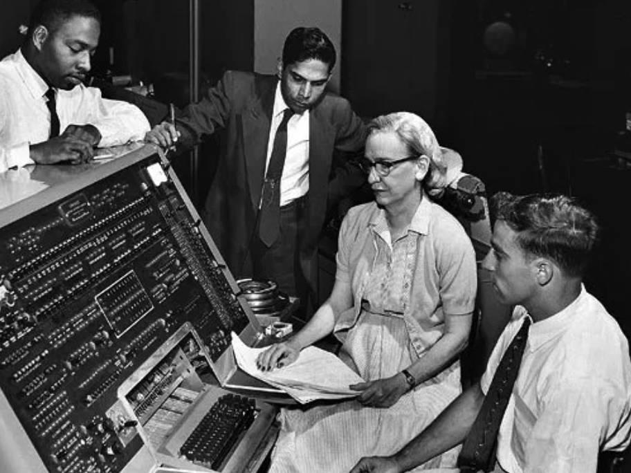
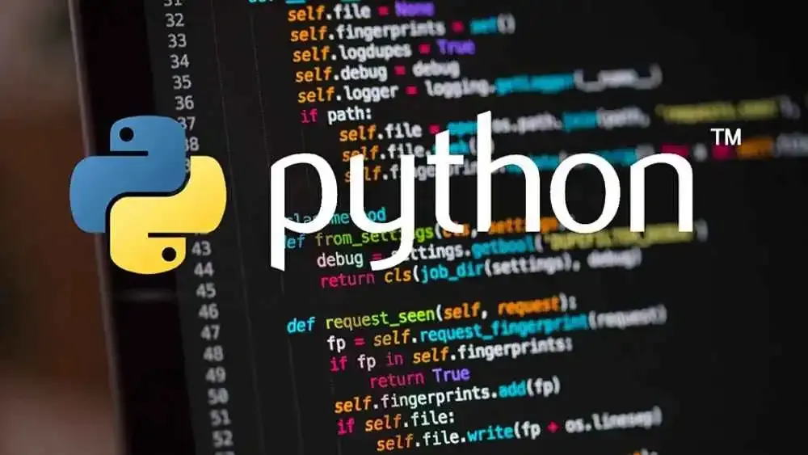
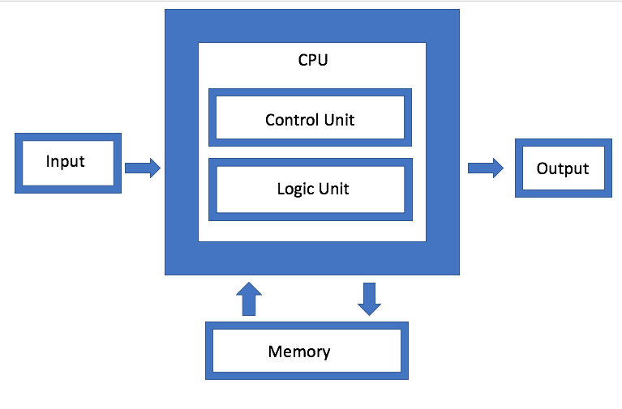

Découvrez quelques exemples de projets réalisés par les élèves et par la même occasion les différents thèmes abordés pendant l'année
En spécialité NSI, les élèves réalisent plusieurs projets afin de mettre en pratique leurs connaissances en programmation, en algorithmique et en développement informatique.
En tout début d'année, on découvre l'histoire de l'informatique.
Chaque élève par groupe de deux doit alors faire un dossier d'une dizaine de page
sur une partie de cette histoire, c'est l'occasion de découvrir plein de nouvelles dates et notions

Python est le langage le plus utilisé en NSI. En début de 1ère, les bases sont très différentes selon les élèves et c'est l'occasion de revoir les variables, listes et boucles.

On entre dans les choses serieuses, cette architecture est celle utilisé aujourd'hui dans presque toutes les machines mais elle est bien souvent oubliée du grand public. Cette séquence est également l'occasion de voir les opérations binaires

C'est une grande partie aui vous occupera pendant 2 chapitre : les bases. Et oui, les ordinateurs utilisent le binaire et l'hexadécimal donc il faut bien apprennet les conversions. Ensuite vous allez apprendre à faire des opérations avec ces nombres. cela donnera lieu à deux projets pour mettre en pratique nos connaissances.
Vous connaissez des déjà les listes mais connaissez vous les dictionnaires ? Peut-être pas, et bien c'est l'occasion de les découvrir. Ce chapitre est très important et commence à nous faire voir égalament la notion de complexité car mieux vaut utilisé les dictionnaires ou les listes ? Vous allez le découvrir en faisant la spécialité.

Si le programme entier vous interesse, vous pouvez le récupérer juste ici !